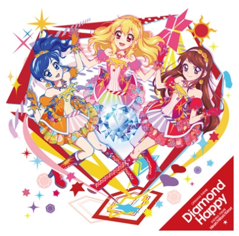
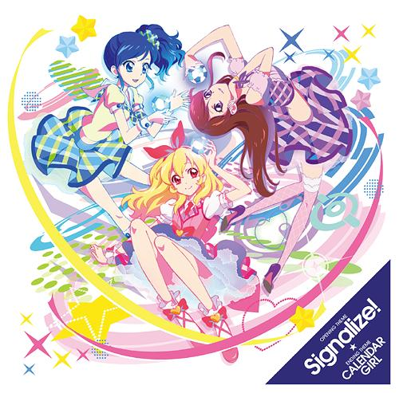

ダイヤモンドハッピー

「Soleil」の代表曲
スカやパンクを取り込んだ楽曲。歌詞も熱い、単に前向きなだけでなく、辛いことがあっても進むぞ、戦うぞっていうのが、初代アイカツの勝負へのこだわりが見れる楽曲。
硝子モード
藤堂ユリカの代表曲
ゴシックメタルとプログレッシブ・ロックをアイドルソングとして昇華させた楽曲。
間奏1分48秒あり、1分間にも渡るディストーションギターとシンセサイザーによるソロパート合戦が切り広げられる。
カレンダーガール

いちご&あおい&蘭&おとめ&ユリカ
ファンク・ディスコ長のアレンジに女の子の日常を描いた歌詞を乗せた楽曲。
アイドル活動で奮闘する女の子の心情が表現され、上昇志向をもった明るいメッセージの中、憂鬱さも感じる「実に不思議な曲」